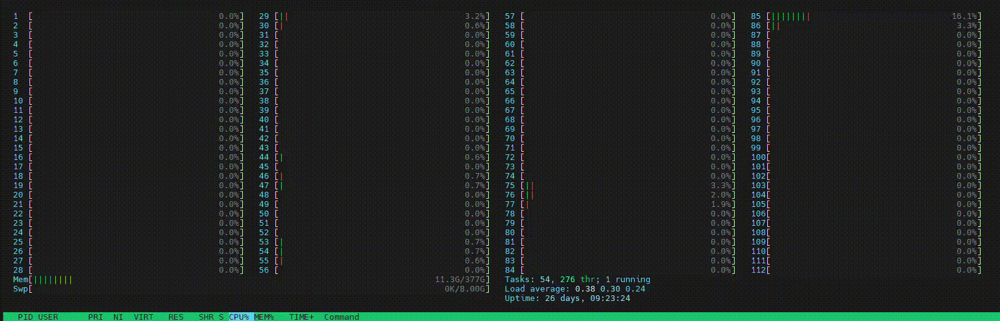

TorchServe with Intel® Extension for PyTorch*
TorchServe can be used with Intel® Extension for PyTorch* (IPEX) to give performance boost on Intel hardware. Here we show how to use TorchServe with IPEX.
Contents of this Document
Install Intel Extension for PyTorch
Refer to the documentation here.
Serving model with Intel Extension for PyTorch
After installation, all it needs to be done to use TorchServe with IPEX is to enable it in config.properties.
ipex_enable=true
Once IPEX is enabled, deploying IPEX exported model follows the same procedure shown here. Torchserve with IPEX can deploy any model and do inference.
Creating and Exporting INT8 model for IPEX
Intel Extension for PyTorch supports both eager and torchscript mode. In this section, we show how to deploy INT8 model for IPEX.
1. Creating a serialized file
First create .pt serialized file using IPEX INT8 inference. Here we show two examples with BERT and ResNet50.
BERT
import intel_extension_for_pytorch as ipex
from transformers import AutoModelForSequenceClassification, AutoConfig
import transformers
from datasets import load_dataset
import torch
# load the model
config = AutoConfig.from_pretrained(
"bert-base-uncased", return_dict=False, torchscript=True, num_labels=2)
model = AutoModelForSequenceClassification.from_pretrained(
"bert-base-uncased", config=config)
model = model.eval()
max_length = 384
dummy_tensor = torch.ones((1, max_length), dtype=torch.long)
jit_inputs = (dummy_tensor, dummy_tensor, dummy_tensor)
conf = ipex.quantization.QuantConf(qscheme=torch.per_tensor_affine)
# calibration
with torch.no_grad():
for i in range(100):
with ipex.quantization.calibrate(conf):
model(dummy_tensor, dummy_tensor, dummy_tensor)
# optionally save the configuraiton for later use
conf.save(‘model_conf.json’, default_recipe=True)
# conversion
model = ipex.quantization.convert(model, conf, jit_inputs)
# save to .pt
torch.jit.save(model, 'bert_int8_jit.pt')
ResNet50
import intel_extension_for_pytorch as ipex
import torchvision.models as models
import torch
import torch.fx.experimental.optimization as optimization
from copy import deepcopy
model = models.resnet50(pretrained=True)
model = model.eval()
dummy_tensor = torch.randn(1, 3, 224, 224).contiguous(memory_format=torch.channels_last)
jit_inputs = (dummy_tensor)
conf = ipex.quantization.QuantConf(qscheme=torch.per_tensor_symmetric)
with torch.no_grad():
for i in range(100):
with ipex.quantization.calibrate(conf):
model(dummy_tensor)
model = ipex.quantization.convert(model, conf, jit_inputs)
torch.jit.save(model, 'rn50_int8_jit.pt')
2. Creating a Model Archive
Once the serialized file ( .pt) is created, it can be used with torch-model-archiver as ususal. Use the following command to package the model.
torch-model-archiver --model-name rn50_ipex_int8 --version 1.0 --serialized-file rn50_int8_jit.pt --handler image_classifier
3. Start Torchserve to serve the model
Make sure to set ipex_enable = True in config.properties. Use the following command to start Torchserve with IPEX.
torchserve --start --ncs --model-store model_store --ts-config config.properties
4. Registering and Deploying model
Registering and deploying the model follows the same steps shown here.
Benchmarking with Launcher
In this section, we show how to use intel_extension_for_pytorch.cpu.launch launcher with Torchserve official benchmark to launch server and benchmark requests. Use the following command to run benchmark on a single socket with all physical cores on the socket.
python -m intel_extension_for_pytorch.cpu.launch --socket_id 0 --ninstance 1 benchmark-ab.py
